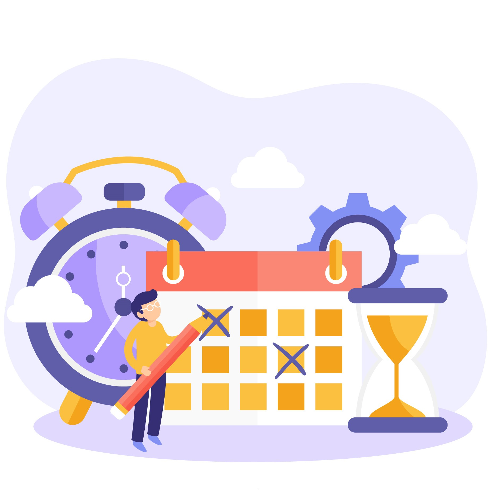

Eventos
Fique por dentro dos eventos de Tecnologia!
Você sabia que a Comunidade de Tecnologia é bastante colaborativa e durante o ano todo acontecem vários eventos, como Meetups, Hackathons, Cursos, entre outros? Aqui você vai encontrar os principais eventos e alguns deles são exclusivos para mulheres!
